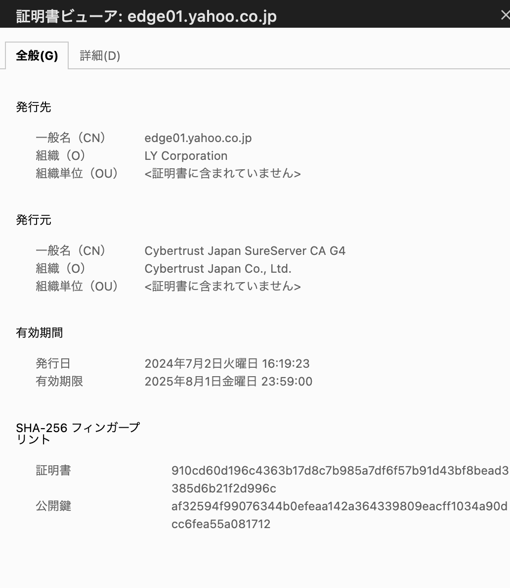

セキュアな通信¶
SSL/TLSとHTTPS¶
SSL(Secure Socket Layer)/TLS(Transport Layer Security)とは、インターネット上でやり取りされるデータの「盗聴」、「改ざん」「なりすまし」を防ぐための暗号化のプロトコルである。
HTTPSとは、インターネットを通じてWebサイトを閲覧するプロトコルであるHTTPをSSL/TLSを利用して暗号化しているプロトコルである。
SSL/TLSの暗号化のながれ¶
以下の暗号化の流れにより、暗号化による盗聴対策が行われるとともに、CA（認証局）とSSL証明書を利用することでなりすましを防止することができる。改ざんについては別途、デジタル署名などを利用して防止している。
クライアントはサーバーへ通信要求
クライアント（例えばブラウザ）がサーバーにHTTPS通信をリクエストします。この段階ではまだ暗号化されていない通信です。サーバーはSSL証明書（公開鍵を含む）をクライアントに送信
サーバーは自分のSSL証明書をクライアントに送信します。この証明書にはサーバーの公開鍵と、証明書発行機関（CA）によるサーバーの信頼性を証明する署名が含まれています。クライアントはSSL証明書を検証
クライアントは、サーバーから受け取ったSSL証明書の信頼性を確認します。具体的には、証明書が信頼できるCAから発行されているか、証明書が有効期限内かどうか、証明書に含まれるドメイン名が接続先と一致しているかなどをチェックします。この検証が成功すると、クライアントはそのサーバーが正当なものであると判断します。クライアントは共通鍵を生成し、公開鍵で暗号化
クライアントは、この後の通信で使う「共通鍵（セッションキー）」を生成します。この共通鍵は、サーバーとクライアントの間で通信データを暗号化するために使用されます。そして、共通鍵をサーバーから受け取った公開鍵で暗号化します。暗号化された共通鍵をサーバーに送信
クライアントは、サーバーから受け取った公開鍵で暗号化した共通鍵をサーバーに送信します。公開鍵で暗号化されたデータは、サーバーの秘密鍵でしか復号化できません。サーバーは秘密鍵を使って共通鍵を復号化
サーバーは自分の秘密鍵を使って、クライアントから送信された暗号化された共通鍵を復号化します。これにより、サーバーとクライアントが同じ共通鍵を共有することになります。共通鍵を使って暗号化された通信を開始
以降、サーバーとクライアントはこの共通鍵を使用して通信データを暗号化し、やり取りします。共通鍵暗号は処理が速いため、効率的に通信を行うことができます。これにより、通信の盗聴やデータ改ざんが防止されます。
なりすましの防止¶
SSL/TLSでは、SSL証明書とCA（認証局）を用いて、通信相手が正当なウェブサイトであることを確認し、なりすましを防止している。
事前にCAがサイト運営者の存在証明や妥当性を確認してからSSL証明書を発行しておき、クライアントからの問い合わせにSSL証明書が信頼できることを保証することで、クライアントはCAを通じてサイト運営者が信頼できることと、通信先がなりすまししていないことを確認できる。
SSL証明書の確認¶
ウェブサイトのURLのアドレスバーから、発行されているSSL証明書などを確認することができる。 SSL証明書により、サイトを運営している会社などを確認することや、サイトがセキュアな通信であることを確認することができる。
例えば、yahooのwebサイトから証明書を確認すると、運営会社と証明書を発行した会社が確認できる。

CAとSSL証明書¶
CA(証明書発行機関)¶
CA(証明書発行機関)とは、SSL証明書を発行する機関であり、以下の役割を担う
申請者の認証
SSL証明書発行
証明書に対するデジタル署名
ルート証明書の管理
申請者の認証¶
サイト運営者はCAにSSL証明書の作成を依頼する時に証明書の署名リクエスト（Certificate Signing Request：CSR）をCAへ提出する。 CSRには、企業名や住所など、申請元に関する情報が含まれている。
CAはCSRや申請元の企業について調査を行い、存在するかどうかや信頼に足るかなどの確認を行う。 確認には以下3つのレベルがあり、レベルによって費用や信頼度が異なる。
証明書の種類 |
認証内容 |
特徴 |
|---|---|---|
DV証明書 （Domain Validation） |
ドメイン所有権の確認 |
最も基本的な認証レベル。サイト運営者の身元は確認しない。 |
OV証明書 （Organization Validation） |
ドメイン所有権 + 組織の実在性確認 |
運営者の組織の存在が確認される。認証プロセスが厳格。 |
EV証明書 （Extended Validation） |
ドメイン所有権 + 組織の詳細な実在性確認 |
最も高い認証レベル。認証プロセスが非常に厳密。URLバーが緑色になる（対応ブラウザ）。 |
SSL証明書の発行¶
存在確認を取ることができたら、SSL証明書を発行する。 証明書には、保証されるWebサイトやサイト運営者および保証をしているCAの情報が含まれる。
項目名 |
説明 |
|---|---|
ドメイン名 |
証明書が適用されるウェブサイトのドメイン名。 |
公開鍵 |
SSL通信で使用されるウェブサイトの公開鍵。クライアントがこれを使ってデータを暗号化する。 |
証明書発行者（CA）情報 |
証明書を発行した認証局（CA）の名前。例: DigiCert, GlobalSign, Let's Encryptなど。 |
サブジェクト（サイト運営者）情報 |
ウェブサイトの所有者や運営者の情報（OVやEV証明書の場合、企業名や所在地が含まれる）。 |
有効期間 |
SSL証明書の発行日と有効期限。証明書はこの期間内でのみ有効。 |
署名アルゴリズム |
証明書に使用された署名アルゴリズム。例: SHA-256など。 |
デジタル署名 |
CAによるデジタル署名。この署名により、証明書が正当なものであり改ざんされていないことが保証される。 |
デジタル署名¶
SSL証明書の中にはデジタル署名が含まれており、このデジタル署名を利用することでCAが発行したものであることを確認することができる。
ルート証明書¶
ルート証明書とは、インターネットの根幹となる技術であり、OSやブラウザは元々信頼できるCAを登録している。 このルート証明書が信頼できるからこそ、CAが信頼されることになる。
AWSのサービスによるウェブサイトのセキュリティ確保の流れ¶
AWSにおいて、SSL証明書を利用する場合、ACM(AWS Certificate Manager)を利用する。
ACMでSSL証明書の発行を発行することもでき、サードパーティで発行されたSSL証明書をImportすることもできる。
※ACMで証明書のImportを行う場合は、us-east-1で行う必要がある点に注意
APIGW、CloudFrontやALBに対してACMで登録したSSL証明書を適用することが可能で、これによってSSL/TLSの暗号化を複合することができる
※関連サービスとACMを連携させる際にACMは同じリージョンに存在する必要がある点に注意